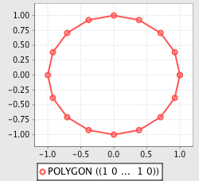
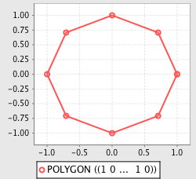
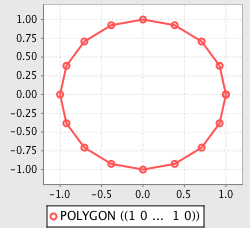
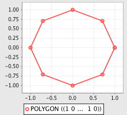

Geometry Advanced¶
The tutorial introduces some more advanced concepts of the geometry module such as:
Simplification
Affine transformation
Voronoi diagrams and Delaunay triangulation
Prerequisites¶
It is recommended that the Geometry Basics tutorial be completed before proceeding.
Simplification¶
The simplify function is used to reduce the number of coordinates composing a geometry, using the Douglas-Peucker algorithm.
>>> from geoscript.geom import *
>>> from geoscript.render import plot
>>> poly = Point(0,0).buffer(1);
>>> plot(poly);
>>> plot(simplify(poly, 0.05));
>>> plot(simplify(poly, 0.1));
js> require("geoscript/viewer").bind()
js> var geom = require("geoscript/geom")
js> var poly = geom.Point([0, 0]).buffer(1);
js> poly
<Polygon [[[1, 0], [0.9807852804032304, -0.19509032201612825], [0.923...>
js> poly.simplify(0.05)
<Polygon [[[1, 0], [0.9238795325112867, -0.3826834323650898], [0.7071...>
js> poly.simplify(0.1)
<Polygon [[[1, 0], [0.7071067811865476, -0.7071067811865475], [6.1232...>
groovy:000> import geoscript.geom.*
groovy:000> import geoscript.render.Plot
groovy:000> poly = new Point(0,0).buffer(1)
groovy:000> Plot.plot(poly)
groovy:000> Plot.plot(poly.simplify(0.05))
groovy:000> Plot.plot(poly.simplify(0.1))
 



See also
Transformations¶
The transform function is used to apply an affine (linear) transformation to a geometry object. Transformation properties include displacement, scaling, shearing, and rotation.
>>> import math
>>> from geoscript.geom import *
>>> from geoscript.render import plot
# displacement
>>> poly = Point(0,0).buffer(1);
>>> plot([poly, transform(poly, dx=0.75)])
# scale + shear
>>> poly = Polygon([(0,0),(1,0),(1,1),(0,1),(0,0)])
>>> plot([poly, transform(poly, sx=2, sy=2, shx=1)])
# rotation
>>> poly = Polygon([(-5,-2),(5,-2),(5,2),(-5,2), (-5,-2)])
>>> poly = poly.union(transform(poly, r=math.degrees(90)))
>>> plot([poly, transform(poly, r=math.degrees(45))])
js> require("geoscript/viewer").bind()
js> var geom = require("geoscript/geom")
js> var poly = geom.Point([0, 0]).buffer(1);
js> poly.transform({dx: 0.75})
<Polygon [[[1.75, 0], [1.7307852804032304, -0.19509032201612825], [1....>
js> poly = geom.Polygon([[[0,0], [1,0], [1,1], [0,1], [0,0]]])
<Polygon [[[0, 0], [1, 0], [1, 1], [0, 1], [0, 0]]]>
js> poly.transform({sx: 2, sy: 2, shx: 1})
<Polygon [[[0, 0], [2, 0], [3, 2], [1, 2], [0, 0]]]>
js> poly = geom.Polygon([[[-5,-2], [5,-2], [5,2], [-5,2], [-5,-2]]])
<Polygon [[[-5, -2], [5, -2], [5, 2], [-5, 2], [-5, -2]]]>
js> poly = poly.union(poly.transform({rotation: 90 * (Math.PI / 180)}))
<Polygon [[[-2, -2], [-5, -2], [-5, 2], [-2, 2], [-2, 5], [2, 5], [2,...>
groovy:000> import geoscript.geom.*
groovy:000> import static geoscript.render.Plot.plot
// displacement
groovy:000> poly = new Point(0,0).buffer(1)
groovy:000> plot([poly, poly.translate(0.75,0)])
// scale + shear
groovy:000> poly = new Polygon([[[0,0],[1,0],[1,1],[0,1],[0,0]]])
groovy:000> plot([poly, poly.scale(2,2).shear(1,0)])
// rotation
groovy:000> poly = new Polygon([[[-5,-2],[5,-2],[5,2],[-5,2],[-5,-2]]])
groovy:000> poly = poly.union(poly.rotate(Math.toRadians(90)))
groovy:000> plot([poly, poly.rotate(Math.toRadians(45))])
See also
See also
Delaunay Triangulation and Voronoi Diagrams¶
For a set of input points (sites) in a given space, a Voronoi diagram computes a tessellation (set of polygons) of that space such that for each point p, the containing polygon consists of all points closer to p than any other point.
In order to compute a Voronoi diagram, a Delaunay triangulation is first computed on the input points.
>>> from geoscript.geom import *
>>> from geoscript.render import plot
>>> poly = Polygon([(35,10), (10,20), (15,40), (45,45), (35,10)], [(20,30), (35,35), (30,20), (20,30)])
>>> dt = delaunay(poly)
>>> plot([poly, dt[0]])
>>> vd = voronoi(poly)
>>> plot([poly, vd])
groovy:000> import geoscript.geom.*
groovy:000> import static geoscript.render.Plot.plot
groovy:000> poly = new Polygon([[[35,10], [10,20], [15,40], [45,45], [35,10]], [[20,30], [35,35], [30,20], [20,30]]])
groovy:000> dt = poly.delaunayTriangleDiagram
groovy:000> plot([poly, dt])
groovy:000> vd = poly.voronoiDiagram
groovy:000> plot([poly, vd])